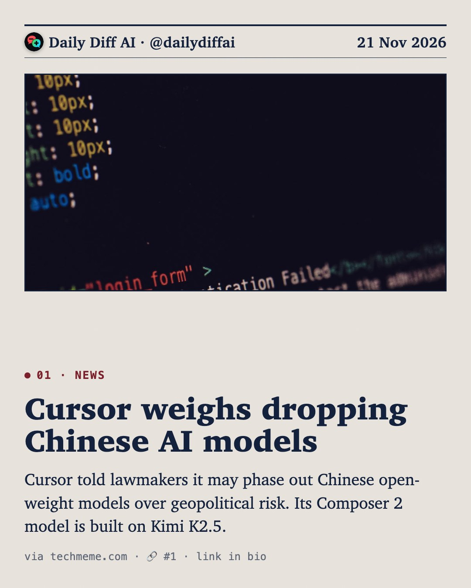
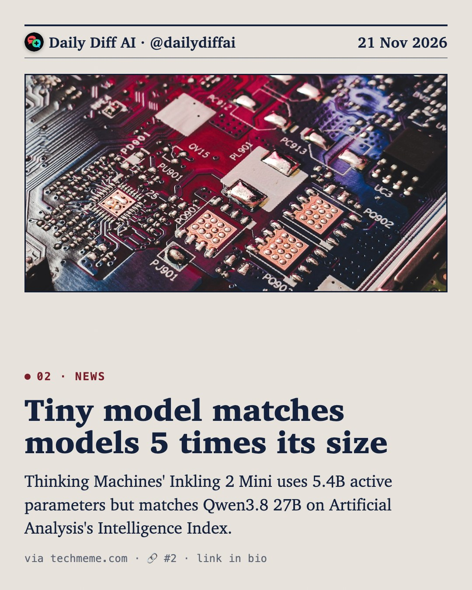
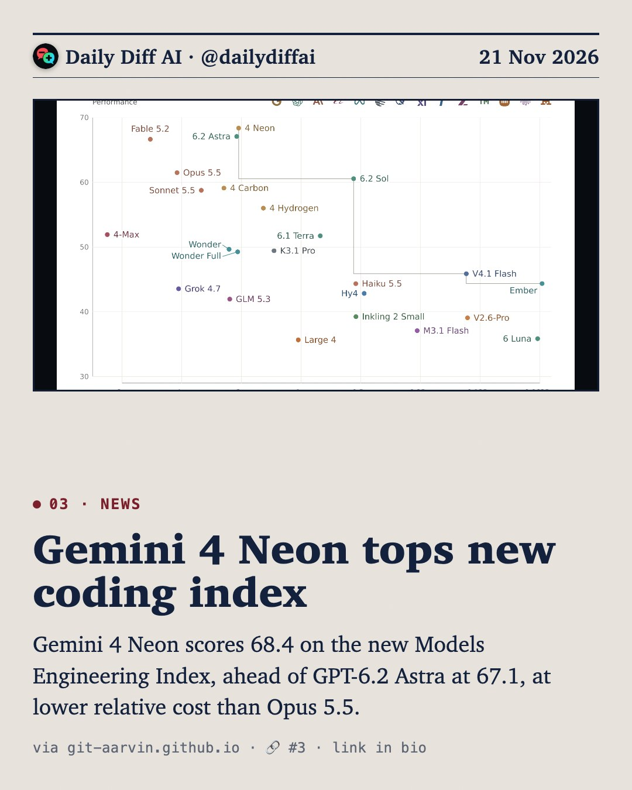
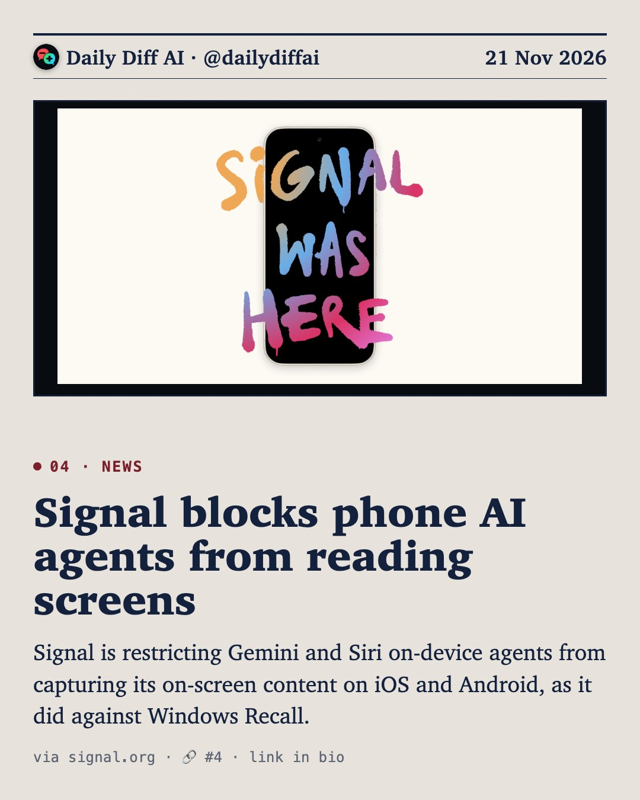
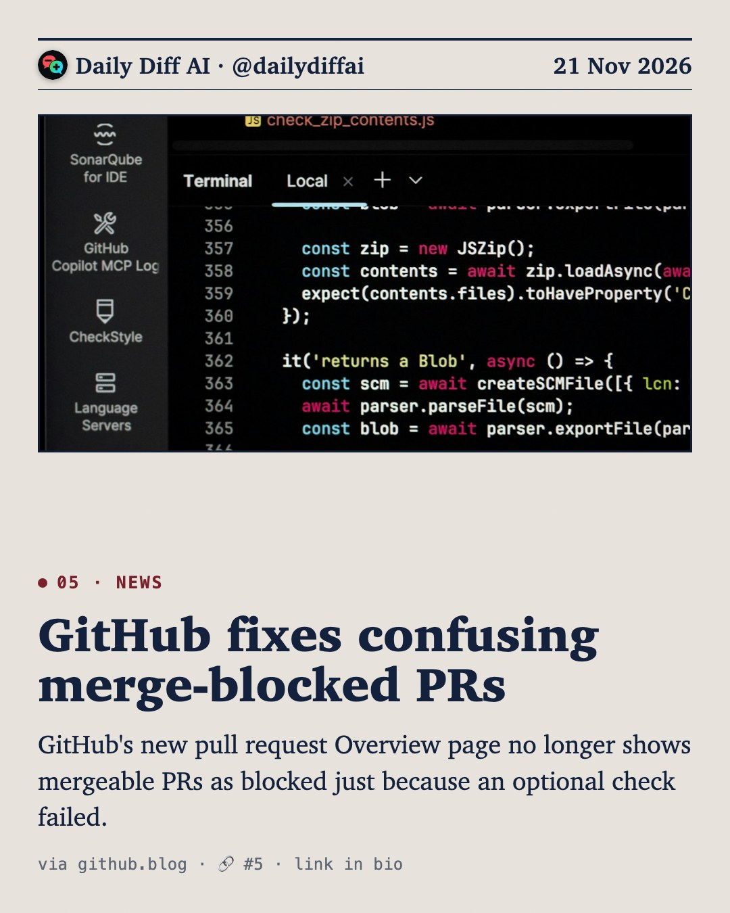
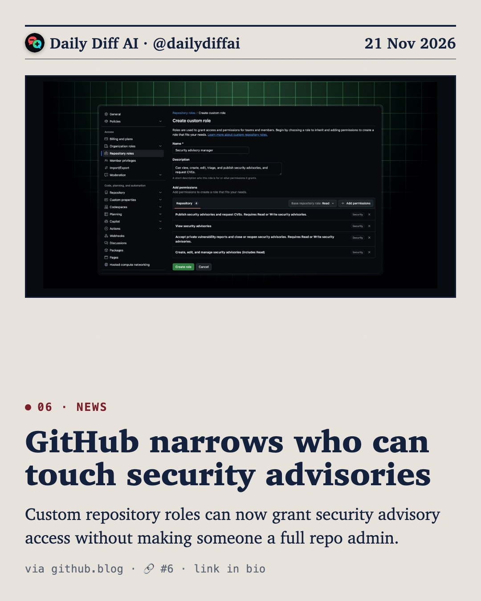
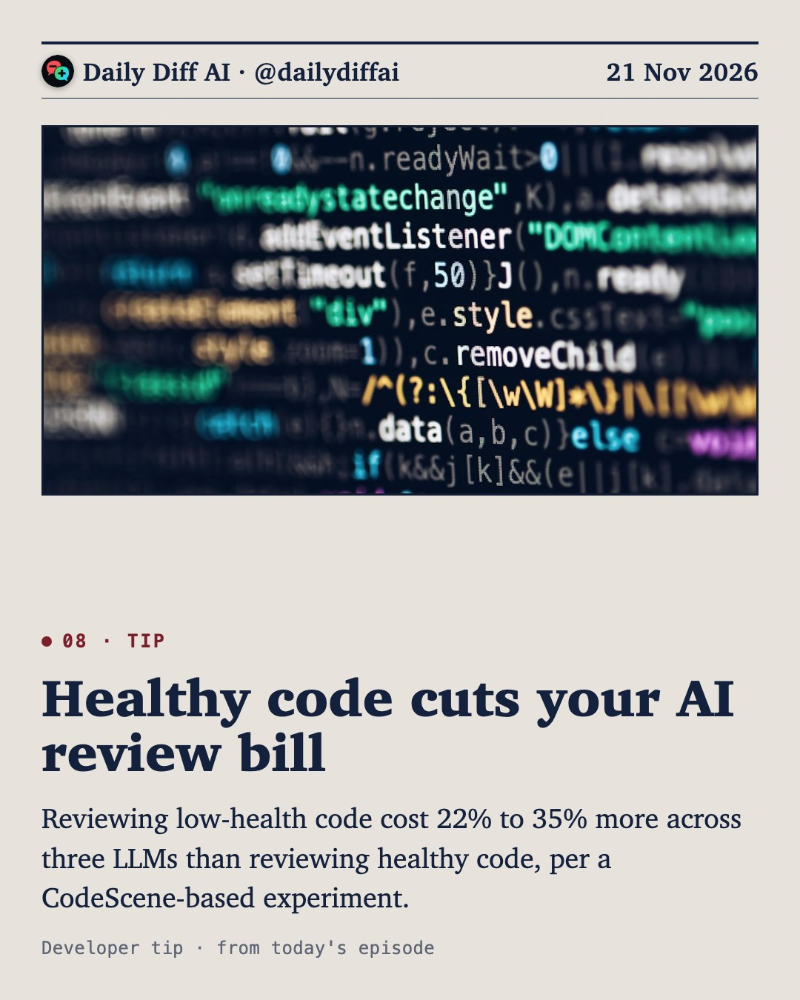

Daily Diff AI

Cursor weighs dropping Chinese AI models
Cursor told lawmakers it may phase out Chinese open-weight models over geopolitical risk. Its Composer 2 model is built on Kimi K2.5.
Read on techmeme.com →
Tiny model matches models 5 times its size
Thinking Machines' Inkling 2 Mini uses 5.4B active parameters but matches Qwen3.8 27B on Artificial Analysis's Intelligence Index.
Read on techmeme.com →
Gemini 4 Neon tops new coding index
Gemini 4 Neon scores 68.4 on the new Models Engineering Index, ahead of GPT-6.2 Astra at 67.1, at lower relative cost than Opus 5.5.
Read on git-aarvin.github.io →
Signal blocks phone AI agents from reading screens
Signal is restricting Gemini and Siri on-device agents from capturing its on-screen content on iOS and Android, as it did against Windows Recall.
Read on signal.org →
GitHub fixes confusing merge-blocked PRs
GitHub's new pull request Overview page no longer shows mergeable PRs as blocked just because an optional check failed.
Read on github.blog →
GitHub narrows who can touch security advisories
Custom repository roles can now grant security advisory access without making someone a full repo admin.
Read on github.blog →Nvidia's seventh straight losing day
Nvidia shares fell 14% Friday, down 44% over seven weeks and $2.5T in market cap, as the SEC probes its accounting.
Read on techmeme.com →
Healthy code cuts your AI review bill
Reviewing low-health code cost 22% to 35% more across three LLMs than reviewing healthy code, per a CodeScene-based experiment.

AI designs a CPU, startup claims big gains
Architect Labs says its AI systems designed and verified a new CPU, Frostbite, claiming 4.59x performance-per-watt over a proven superscalar chip.
Read on architectlabs.com →
CrowdStrike and Zscaler in talks to merge
CrowdStrike is reportedly in talks to acquire Zscaler, which would create a combined security company worth about $265B.
Read on techmeme.com →